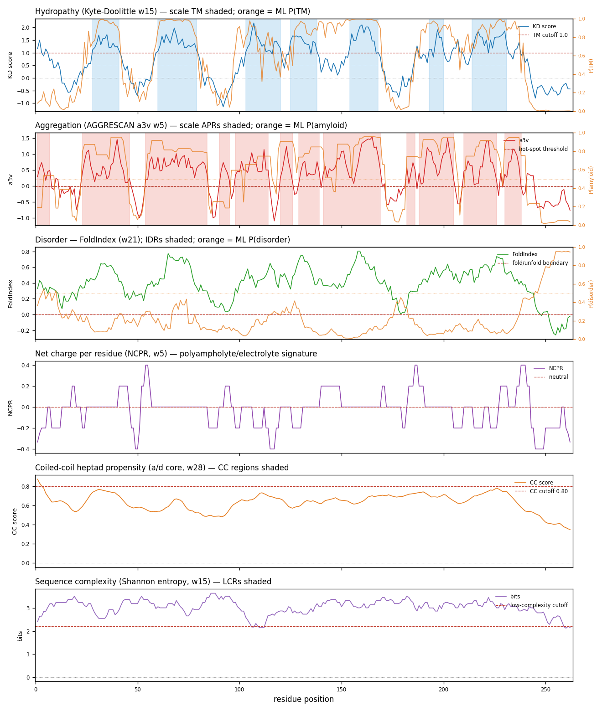
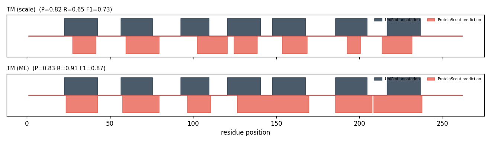
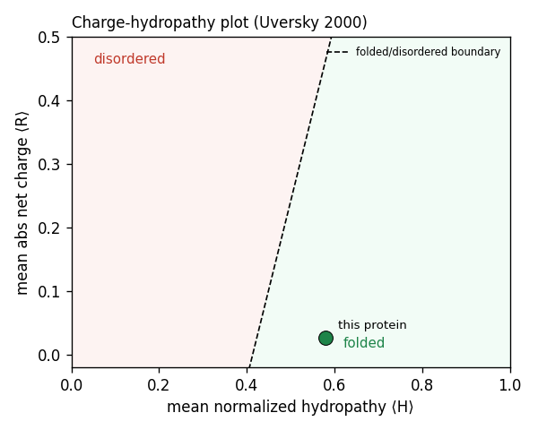

sp|P02945|BACR_HALSA Bacteriorhodopsin OS=Halobacterium salinarum (strain ATCC 700922 / JCM 11081 / NRC-1) OX=64091 GN=bop PE=1 SV=2

Held-out ROC-AUC on real labeled benchmarks (WALTZ-DB amyloid, DisProt disorder, UniProt TRANSMEM). The ML model uses windowed multi-scale + composition features; the baseline is the single published scale the classic method uses. Δ > 0 means the ML layer adds value.
| task | baseline scale | baseline AUC | ML AUC | Δ AUC | ML AUPRC |
|---|---|---|---|---|---|
| amyloid | AGGRESCAN a3v (mean) | 0.811 | 0.849 | +0.039 | 0.724 |
| disorder | TOP-IDP (windowed mean) | 0.775 | 0.815 | +0.040 | 0.561 |
| tm | Kyte-Doolittle (window-19 mean) | 0.951 | 0.964 | +0.013 | 0.737 |
Predicted regions (red, below axis) overlaid on curated UniProt feature annotations (dark, above axis). Per-residue precision / recall / F1:
| track | precision | recall | F1 |
|---|---|---|---|
| TM (scale) | 0.82 | 0.65 | 0.73 |
| TM (ML) | 0.83 | 0.91 | 0.87 |


Bacteriorhodopsin from *Halobacterium salinarum* is a well-folded integral membrane protein with a strongly negative charge-hydropathy margin (-0.438), consistent with its known structure as a seven-transmembrane helix protein. The predicted topology shows 6 TM helices by the hydrophobicity scale (residues 28-41, 60-79, 103-120, 125-138, 154-168, 193-200) with N-terminus facing outward, though the canonical seventh helix may be missed due to threshold settings. Both scale and ML methods identify extensive aggregation-prone regions (23-46, 54-84, 103-115) that overlap significantly with the transmembrane segments, which is expected for membrane proteins where hydrophobic residues necessary for membrane insertion can appear as false-positive aggregation signals. The absence of any predicted disordered regions by both methods aligns with bacteriorhodopsin's known compact, helical structure, and the lack of signal peptide is consistent with its insertion via the TAT pathway in halophilic archaea.
Generated by Claude (Anthropic) from the computed profiles above.
Kyte-Doolittle window-15 hydropathy peak ≥ 1.0 over ≥7 residues.
| start | end | len | peak hydropathy | mean |
|---|---|---|---|---|
| 28 | 41 | 14 | 1.72 | 1.35 |
| 60 | 79 | 20 | 1.98 | 1.42 |
| 103 | 120 | 18 | 2.18 | 1.36 |
| 125 | 138 | 14 | 1.67 | 1.43 |
| 154 | 168 | 15 | 2.11 | 1.63 |
| 193 | 200 | 8 | 1.91 | 1.34 |
| 214 | 231 | 18 | 1.86 | 1.50 |
Logistic model on windowed multi-scale features; P(TM) ≥ 0.5 over ≥7 residues.
| start | end | len | peak P(TM) |
|---|---|---|---|
| 24 | 42 | 19 | 0.99 |
| 58 | 79 | 22 | 0.99 |
| 97 | 110 | 14 | 0.98 |
| 127 | 169 | 43 | 1.00 |
| 186 | 207 | 22 | 0.98 |
| 209 | 237 | 29 | 0.99 |
N-terminus predicted out (von Heijne 1992; inside loops K+R density 0.099).
| start | end | orientation |
|---|---|---|
| 28 | 41 | out->in |
| 60 | 79 | in->out |
| 103 | 120 | out->in |
| 125 | 138 | in->out |
| 154 | 168 | out->in |
| 193 | 200 | in->out |
| 214 | 231 | out->in |
AGGRESCAN a3v hot-spots (≥5 residues above threshold).
| start | end | len | peak a3v | sequence |
|---|---|---|---|---|
| 1 | 7 | 7 | 0.73 | MLELLPT |
| 23 | 46 | 24 | 1.45 | WIWLALGTALMGLGTLYFLVKGMG |
| 54 | 84 | 31 | 1.01 | KFYAITTLVPAIAFTMYLSMLLGYGLTMVPF |
| 90 | 95 | 6 | 0.73 | PIYWAR |
| 98 | 114 | 17 | 1.14 | DWLFTTPLLLLDLALLV |
| 120 | 126 | 7 | 1.23 | TILALVG |
| 129 | 139 | 11 | 0.77 | GIMIGTGLVGA |
| 141 | 169 | 29 | 1.53 | TKVYSYRFVWWAISTAAMLYILYVLFFGF |
| 182 | 186 | 5 | 0.73 | STFKV |
| 188 | 205 | 18 | 1.49 | RNVTVVLWSAYPVVWLIG |
| 210 | 226 | 17 | 1.40 | GIVPLNIETLLFMVLDV |
| 230 | 238 | 9 | 1.16 | VGFGLILLR |
Hexapeptide amyloid model scanned across the sequence; P(amyloid) ≥ 0.5.
| start | end | len | peak P(amyloid) |
|---|---|---|---|
| 4 | 9 | 6 | 0.54 |
| 23 | 45 | 23 | 0.95 |
| 54 | 84 | 31 | 0.92 |
| 96 | 101 | 6 | 0.59 |
| 103 | 115 | 13 | 0.75 |
| 119 | 145 | 27 | 0.91 |
| 148 | 171 | 24 | 0.96 |
| 182 | 207 | 26 | 0.95 |
| 211 | 228 | 18 | 0.92 |
| 230 | 240 | 11 | 0.95 |
None predicted.
None predicted.
None predicted.
None predicted.
None predicted.
| aa | % | |
|---|---|---|
| L | 14.9% | |
| A | 11.5% | |
| G | 9.9% | |
| V | 8.8% | |
| T | 7.3% | |
| I | 5.7% | |
| S | 5.3% | |
| F | 5.0% | |
| P | 4.6% | |
| E | 4.2% | |
| Y | 4.2% | |
| D | 3.8% | |
| M | 3.8% | |
| W | 3.1% | |
| K | 2.7% | |
| R | 2.7% | |
| Q | 1.5% | |
| N | 1.1% |
<span class='pos'> 1</span> MLELLPTAVEGVSQAQITGRPEWIWLALGTALMGLGTLYFLVKGMGVSDPDAKKFYAITT <span class='pos'> 61</span> LVPAIAFTMYLSMLLGYGLTMVPFGGEQNPIYWARYADWLFTTPLLLLDLALLVDADQGT <span class='pos'> 121</span> ILALVGADGIMIGTGLVGALTKVYSYRFVWWAISTAAMLYILYVLFFGFTSKAESMRPEV <span class='pos'> 181</span> ASTFKVLRNVTVVLWSAYPVVWLIGSEGAGIVPLNIETLLFMVLDVSAKVGFGLILLRSR <span class='pos'> 241</span> AIFGEAEAPEPSAGDGAAATSD